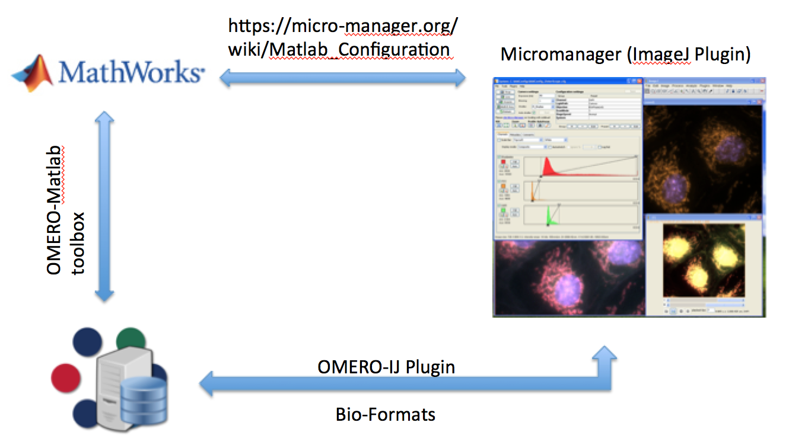

Integration of OMERO with 3rd Party Applications
Paris 2015
Balaji Ramalingam
Outline
- OMERO and Analysis
- ImageJ and OMERO
- OMERO and Acquisition
- Micro-Manager and OMERO
- OMERO and Intelligent Acquisition
- Matlab, Micro-Manager and OMERO
OMERO and Analysis
OMERO and Acquisition
OMERO and Intelligent Acquisition
Setup Matlab ClassPath
- Micro-Manager Configuration
java.lang.System.clearProperty('java.util.prefs.PreferencesFactory')
javaaddpath('/Applications/Micro-Manager1.4/ij.jar')
javaaddpath('/Applications/Micro-Manager1.4/plugins/Micro-Manager/MMCoreJ.jar')
javaaddpath('/Applications/Micro-Manager1.4/plugins/Micro-Manager/MMJ_.jar')
javaaddpath('/Applications/Micro-Manager1.4/plugins/Micro-Manager/bsh-2.0b4.jar')
javaaddpath('/Applications/Micro-Manager1.4/plugins/Micro-Manager/swingx-0.9.5.jar')
javaaddpath('/Applications/Micro-Manager1.4/plugins/Micro-Manager/swing-layout-1.0.4.jar')
javaaddpath('/Applications/Micro-Manager1.4/plugins/Micro-Manager/ome-xml.jar')
javaaddpath('/Applications/Micro-Manager1.4/plugins/Micro-Manager/loci-common.jar')
javaaddpath('/Applications/Micro-Manager1.4/plugins/Micro-Manager/scifio.jar')
javaaddpath('/Applications/Micro-Manager1.4/plugins/Micro-Manager/slf4j-api-1.7.1.jar')inputdir=['/Users/bramalingam/OME/matlab/OMERO.matlab-5.1.0-ice35-b40'];
addpath(genpath(inputdir));
javaaddpath('/Users/bramalingam/OME/matlab/OMERO.matlab-5.1.0-ice35-b40/libs/omero_client.jar')
javaaddpath('/Users/bramalingam/OME/matlab/OMERO.matlab-5.1.0-ice35-b40/libs/ini4j.jar')
javaaddpath('/Users/bramalingam/OME/matlab/OMERO.matlab-5.1.0-ice35-b40/libs/bioformats_package.jar')Config,Snap and Save Image
- Micro-Manager : Load Microscope Configuration
import mmcorej.*;
mmc = CMMCore;
mmc.loadSystemConfiguration('/Applications/Micro-Manager1.4/MMConfig_demo.cfg');
mmc.snapImage();
img = mmc.getImage();
proc0 = ImageUtils.makeProcessor(mmc, img);
imgp0 = ImagePlus('',proc0);
imgp0.show;
IJ.runPlugIn('loci.plugins.LociExporter', buffer.toString);Upload Image and ...
- OMERO: Create a Client and Session
client = loadOmero(host);
session = client.createSession(username, password);
client.enableKeepAlive(60);upload_image(path,session,username,password,ProjectName,DatasetName,host,importopt)... add Metadata
- Micro-Manager
devices = mmc.getLoadedDevices();
cvec =[];
for i=0:devices.size-1
properties = mmc.getDevicePropertyNames(devices.get(i));
cvec = [cvec ; {char(devices.get(i))} {'#'}];
for j = 0:properties.size-1
s = properties.get(j);
v = mmc.getProperty(devices.get(i),s);
cvec = [cvec ; {char(s)} {char(v)}];
imgp0.setProperty(char(s), char(v));
end
endmap = writeMapAnnotation(session, cvec(:,1)',cvec(:,2)');
link1 = linkAnnotation(session, map, 'image', imageId(1));
session.getUpdateService().saveAndReturnObject(link1);Summary
-

Documentation
- Micro-Manager and Matlab
- OMERO and Matlab
- OMERO and ImageJ
- Matlab Scripts
Thank you
- Prof. Jason Swedlow
- OME team